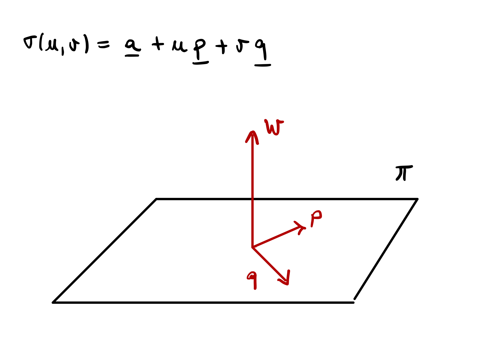

4 Surfaces
Curves are 1D objects in \(\mathbb{R}^3\), parametrized via functions \({\pmb{\gamma}}\colon (a,b) \to \mathbb{R}^3\). There is only one available direction in which to move on a curve:
- \(t \mapsto {\pmb{\gamma}}(t)\) moves forward on the curve
- \(t \mapsto {\pmb{\gamma}}(-t)\) moves backward on the curve

Surfaces are 2D objects in \(\mathbb{R}^3\). There are two directions in which one can move on a surface.

Question 1
How to dercribe a surface mathematically?
A curve \(\Gamma \subseteq \mathbb{R}^3\) can be described with one function \({\pmb{\gamma}}\colon (a,b) \to \Gamma\). The idea is that \(\Gamma\) looks locally like \(\mathbb{R}\).

A surface \(\mathcal{S}\) cannot be described, in general, with just one function \({\pmb{\sigma}}\colon U \to \mathcal{S}\), with \(U \subseteq \mathbb{R}^2\) open set. The idea is that, to describe \(\mathcal{S}\), one needs to piece together many local charts \({\pmb{\sigma}}_i \colon U_i \to \mathcal{S}\) with \(U_i \subseteq \mathbb{R}^2\) open. Such charts have to cover the whole surface \(\mathcal{S}\), e.g. \[ \mathcal{S}= \bigcup_{i} {\pmb{\sigma}}_i (U_i) \,. \]
4.1 Preliminaries
Before proceeding with the formal definition of surface, we need to establish some basic notation and terminology regarding the topology of \(\mathbb{R}^n\) and smooth maps from \(\mathbb{R}^n\) into \(\mathbb{R}^m\).
4.1.1 Topology of \(\mathbb{R}^n\)
The Euclidean norm on \(\mathbb{R}^n\) is denoted by \[ \| \mathbf{x}\| := \sqrt{ \sum_{i=1}^n x_i^2 }\,, \quad \mathbf{x}= (x_1 , \ldots, x_n) \in \mathbb{R}^n \,. \] The Euclidean norm induces the distance \[ d(\mathbf{x},\mathbf{y}) := \| \mathbf{x}- \mathbf{y}\| = \sqrt{ \sum_{i=1}^n (x_i - y_i)^2 } \,. \]
Definition 2: Euclidean Topology
The pair \((\mathbb{R}^n,d)\) is a metric space. The topology induced by the metric \(d\) is called the Euclidean topology, denoted by \(\mathcal{T}\). In this chapter we will always assume that \(\mathbb{R}^n\) is equipped with the Euclidean topology \(\mathcal{T}\).
Definition 3: Open Sets
A set \(U \subseteq \mathbb{R}^n\) is open if for all \(\mathbf{x}\in U\) there exists \(\varepsilon>0\) such that \(B_{\varepsilon}(\mathbf{x}) \subseteq U\), where \[
B_{\varepsilon}(\mathbf{x}) := \{ \mathbf{y}\in \mathbb{R}^n \, \colon \,\| \mathbf{x}- \mathbf{y}\| < \varepsilon\}
\] is the open ball of radius \(\varepsilon>0\) and centered at \(\mathbf{x}\). In this case we denote \(U \in \mathcal{T}\), with \(\mathcal{T}\) the Euclidean topology in \(\mathbb{R}^n\).
Definition 4: Closed Sets
A set \(V \subseteq \mathbb{R}^n\) is closed if \(V^c := \mathbb{R}^n \smallsetminus U\) is open.
Example 5
The \(n\)-dimensional unit sphere \[ \mathbb{S}^n = \{ \mathbf{x}\in \mathbb{R}^{n+1} \, \colon \,\| x \| = 1 \} \] is not open in \(\mathbb{R}^{n+1}\), since for any \(\mathbf{x}\in \mathbb{S}^n\) we have \[ B_{\varepsilon} (\mathbf{x}) \not\subseteq \mathbb{S}^{n} \,. \]
The \(n\)-dimensional unit cube \[ C := \{ \mathbf{x}\in \mathbb{R}^n \, \colon \,|x_1| + \ldots + |x_n| <1 \} \] is open in \(\mathbb{R}^n\), since one can always find \(\varepsilon>0\) small enough so that \[ B_{\varepsilon} (\mathbf{x}) \not\subseteq C \,. \]
The set \[ V := \{ \mathbf{x}\in \mathbb{R}^n \, \colon \,|x_1| + \ldots + |x_n| \geq 1 \} \] is closed, since \(V^c = C\) is the unit cube, which is open.
Definition 6: Subspace Topology
Given a subset \(A \subseteq \mathbb{R}^n\) the subspace topology on \(A\) is the family of sets \[
\mathcal{T}_A := \{ U \subseteq A \, \colon \,\exists \,\, W \in \mathcal{T}\, \text{ s.t. } \, U = A \cap W \} \,.
\] If \(U \in \mathcal{T}_A\) we say that \(U\) is open in \(A\).
4.1.2 Smooth functions
We recall some basic facts about smooth functions from \(\mathbb{R}^n\) into \(\mathbb{R}^m\). For a vector valued function \(f \colon \mathbb{R}^n \to \mathbb{R}^m\) we denote its components by \[ f = (f_1,\ldots,f_m) \,. \]
Definition 7: Continuous Function
Let \(f \colon U \subseteq \mathbb{R}^n \to \mathbb{R}^m\) with \(U\) open. We say that \(f\) is continuous at \(\mathbf{x}\in U\) if \(\forall \, \varepsilon>0\), , \(\exists \, \delta > 0\) such that \[
\| \mathbf{x}- \mathbf{y}\| < \delta \quad \implies \quad
\| f(\mathbf{x}) - f (\mathbf{y}) \| < \varepsilon\,.
\] We say that \(f\) is continuous in \(U\) if it is continuous for all \(\mathbf{x}\in U\).
Remark 8
Let \(f \colon U \subseteq \mathbb{R}^n \to V \subseteq \mathbb{R}^m\), with \(U,V\) open. We have that \(f\) is continuous if and only if \(f^{-1}(A)\) is open in \(U\), for all \(A\) open in \(V\).
Definition 9: Homeomorphism
Let \(f \colon U \subseteq \mathbb{R}^n \to V \subseteq \mathbb{R}^m\) with \(U,V\) open. We say that \(f\) is a homeomorphism if \(f\) is continuous and there exists inverse \(f^{-1} \colon V \to U\) continuous.
Definition 10: Differentiable Function
Let \(f \colon U \subseteq \mathbb{R}^n \to \mathbb{R}^m\) with \(U\) open. We say that \(f\) is differentiable at \(\mathbf{x}\in U\) if there exists a linear map \(df_{\mathbf{x}} \colon \mathbb{R}^n \to \mathbb{R}^m\) such that \[
\lim_{\varepsilon\to 0} \ \frac{ f(\mathbf{x}+ \varepsilon\pmb{h} ) - f(\mathbf{x}) - \varepsilon\, df_{\mathbf{x}}(\pmb{h}) }{ \varepsilon} = 0 \,,
\] for all \(\pmb{h} \in \mathbb{R}^n\), where the limit is taken in \(\mathbb{R}^m\). The map \(df_{\mathbf{x}}\) is called the differential of \(f\) at \(\mathbf{x}\).
We denote by \(\{\mathbf{e}_i\}_{i=1}^n\) the standard basis of \(\mathbb{R}^n\).
Definition 11: Partial Derivative
Let \(f \colon U \subseteq \mathbb{R}^n \to \mathbb{R}^m\) with \(U\) open be differentiable. The partial derivative of \(f\) at \(\mathbf{x}\in U\) in direction \(\mathbf{e}_i\) is given by \[
\frac{\partial f}{\partial x_i} := \lim_{\varepsilon\to 0} \frac{ f( \mathbf{x}+ \varepsilon\mathbf{e}_i ) - f(\mathbf{x}) }{ \varepsilon} \,.
\]
Definition 12: Jacobian Matrix
The linear map \(df_{\mathbf{x}} \colon \mathbb{R}^n \to \mathbb{R}^m\) can be represented in matrix form, with respect to the Euclidean basis, by the Jacobian matrix \[
Jf(x):= \left( \frac{\partial f_i}{\partial x_j} \right)_{i,j} \in \mathbb{R}^{m \times n} \,.
\] If \(m=n\) then \(Jf \in \mathbb{R}^{n \times n}\) is a square matrix and we can compute its determinant, denoted by \[
\det Jf \,.
\]
Definition 13: Multi-index notation
For a multi-index \[
\alpha := (\alpha_1, \ldots , \alpha_n) \in \mathbb{N}^n
\] we denote by \[
|\alpha|:= \sum_{i=1}^n |\alpha_i|
\] the length of the multi-index.
Definition 14: Smooth Function
Let \(f \colon U \subseteq \mathbb{R}^n \to \mathbb{R}^m\) with \(U\) open. We say that \(f\) is smooth if the derivatives \[
\frac{\partial^{|\alpha|} f}{d\mathbf{x}^\alpha} := \frac{\partial^{\alpha_1}}{ \partial x_1^{\alpha_1}} \cdots \frac{\partial^{\alpha_n}}{ \partial x_n^{\alpha_n}} \, f
\] exist for each multi-index \(\alpha \in \mathbb{N}^n\). Note that in this case all the derivatives of \(f\) are automatically continuous.
Notation: Gradient and partial derivatives
Let \(f \colon U \subseteq \mathbb{R}^n \to \mathbb{R}\) be smooth. We denote the partial derivatives by \[
\partial_{x_i} f := \frac{\partial f}{\partial x_i} \,, \quad
\partial_{x_i x_j} f := \frac{\partial^2 f}{\partial x_i \partial x_j} \,,
\quad
\partial_{x_i x_j x_k} f := \frac{\partial^3 f}{\partial x_i \partial x_j \partial x_k} \,.
\]
For \(f \colon U \subseteq \mathbb{R}^n \to \mathbb{R}\) smooth we denote the gradient by \[ \nabla f (\mathbf{x}) = \left( f_{x_1}(\mathbf{x}) , \ldots , f_{x_n}(\mathbf{x}) \right) \,. \]
Example 15
The functions \(f \colon \mathbb{R}^2 \to \mathbb{R}\) and \(g \colon \mathbb{R}^2 \to \mathbb{R}^3\) defined by \[
f(x,y) := \cos(x)y \,, \quad
g(x,y) := (x^2,y^2,x-y)
\] are both smooth.
Definition 16: Diffeomorphism
Let \(f \colon U \to V\) with \(U \subseteq \mathbb{R}^n\) and \(V \subseteq \mathbb{R}^n\) open. We say that \(f\) is a diffeomorphism between \(U\) and \(V\) if \(f\) is smooth and there exists smooth inverse \(f^{-1} \colon V \to U\).
We recall, without proof, the Inverse Function Theorem. Please note that in the statement the function \(f\) is defined from \(\mathbb{R}^n\) into \(\mathbb{R}^n\).
Theorem 17: Inverse Function Theorem
Let \(f \colon U \to \mathbb{R}^n\) with \(U \subseteq \mathbb{R}^n\) open. Suppose \(f\) is a smooth function and \[
\det J f(\mathbf{x}_0) \neq 0 \,,
\] for some \(\mathbf{x}_0 \in U\). Then there exist open sets \(U_0 , V \subseteq \mathbb{R}^n\) such that \(\mathbf{x}_0 \in U_0\), \(f(\mathbf{x}_0) \in V\) and \(f \colon U_0 \to V\) is a diffeomorphism.
Warning
Even if \[
\det J f(\mathbf{x}) \neq 0 \,,
\] for all \(\mathbf{x}\in U\), it is not guaranteed that \(f\) is a diffeomorphism between \(U\) and \(f(U)\).
Non-vanishing Jacobian determinant is a necessary condition for being a diffeomorphism.
Proposition 18
Let \(f \colon U \to \mathbb{R}^n\) with \(U \subseteq \mathbb{R}^n\) open. Suppose \(f\) is a diffeomorphism on \(U\). Then \[
\det Jf (\mathbf{x}) \neq 0 \,, \quad \forall \, \mathbf{x}\in U \,.
\]
Example 19
Define \(f \colon \mathbb{R}^2 \to \mathbb{R}^2\) by \[
f(x,y) := (\cos(x) \sin(y), \sin(x) \sin(y)) \,.
\] Then \[
J f (x,y) =
\left(
\begin{array}{cc}
- \sin(x) \sin(y) & \cos(x) \cos(y) \\
\cos(x) \sin(y) & \sin(x) \cos(y)
\end{array}
\right) \,.
\] and \[\begin{align*}
\det Jf(x,y) & = - \sin^2(x) \cos(y) \sin(y) - \cos^2(x) \cos(y) \sin(y) \\
& = - \sin(y) \cos(y) \\
& = - \frac{1}{2} \sin(2y) \,.
\end{align*}\] Therefore \[
\det Jf(x,y) \neq 0 \quad \iff \quad
y \neq \frac{n \pi}{2} \,, \,\, n \in \mathbb{N}\,.
\] Hence \(f\) is a diffeomorphism away from the lines \[
L_n := \left\{ \left(x, \frac{n \pi}{2} \right) \, \colon \,x \in \mathbb{R}\right\} \,.
\]
4.2 Definition of Surface
We give our main definition of surface in \(\mathbb{R}^3\).
Definition 20: Surface
Let \(\mathcal{S}\subseteq \mathbb{R}^3\) be a connected set. We say that \(\mathcal{S}\) is a surface if for every point \(\mathbf{p}\in \mathcal{S}\) there exist an open set \(U \subseteq \mathbb{R}^2\) and a smooth map \[ {\pmb{\sigma}}\colon U \to {\pmb{\sigma}}(U) \subseteq \mathcal{S}\, \] such that
- \(\mathbf{p}\in {\pmb{\sigma}}(U)\)
- \({\pmb{\sigma}}(U)\) is open in \(\mathcal{S}\)
- \({\pmb{\sigma}}\) is a homeomorphism between \(U\) and \({\pmb{\sigma}}(U)\)
Further:
- The homeomorphism \({\pmb{\sigma}}\) is called a surface chart at \(\mathbf{p}\).
- For each \(i \in I\) suppose to have a surface chart \[ {\pmb{\sigma}}_i \colon U_i \to {\pmb{\sigma}}(U_i) \subseteq \mathcal{S}\,. \] We say that the family \[ \mathcal{A} = \{ {\pmb{\sigma}}_i\}_{i \in I} \] is an atlas of \(\mathcal{S}\) if \[ \mathcal{S}= \bigcup_{i \in I} {\pmb{\sigma}}_i(U_i) \,. \]
Remark 21
A surface chart \({\pmb{\sigma}}\) is a map \[ {\pmb{\sigma}}\colon U \to \mathbb{R}^3 \,, \] with \(U \subseteq \mathbb{R}^2\) open. Therefore smoothness of \({\pmb{\sigma}}\) is intended in the classical sense.
Given a chart \({\pmb{\sigma}}\colon U \to {\pmb{\sigma}}(U)\), the set \(U\) is open in \(\mathbb{R}^2\) while \({\pmb{\sigma}}(U)\) is open in \(\mathcal{S}\) with the subspace topology. This means that there exists \(W \subseteq \mathbb{R}^3\) open such that \[ {\pmb{\sigma}}(U) = W \cap \mathcal{S}\,. \]
The omeomorphism condition is saying that \({\pmb{\sigma}}(U) \subseteq \mathcal{S}\) looks locally (around \(\mathbf{p}\)) like an open set \(U \subseteq \mathbb{R}^2\).

Notation
Points in \(U\) will be denoted with the pair \((u,v)\).
Partial derivatives of a chart \({\pmb{\sigma}}= {\pmb{\sigma}}(u,v)\) will be denoted by \[ {\pmb{\sigma}}_u := \frac{\partial {\pmb{\sigma}}}{\partial u} \,, \quad {\pmb{\sigma}}_v := \frac{\partial {\pmb{\sigma}}}{\partial v} \,. \] Similar notations are adopted for higher order derivatives, e.g., \[\begin{align*} {\pmb{\sigma}}_{uu} & := \frac{\partial^2 {\pmb{\sigma}}}{\partial u^2} \,, & {\pmb{\sigma}}_{uv} & := \frac{\partial^2 {\pmb{\sigma}}}{\partial u \partial v} \,, \\ {\pmb{\sigma}}_{vu} & := \frac{\partial^2 {\pmb{\sigma}}}{\partial v \partial u } \,, & {\pmb{\sigma}}_{vv} & := \frac{\partial^2 {\pmb{\sigma}}}{\partial v^2 } \,, \\ \end{align*}\]
Components of \({\pmb{\sigma}}\) will be denoted by \[ {\pmb{\sigma}}= (\sigma^1, \sigma^2, \sigma^3) \,. \]
Example 22: 2D Plane in \(\mathbb{R}^3\)
Planes in \(\mathbb{R}^3\) are surfaces with atlas containing one chart. Namely, a plane \(\pi \subseteq \mathbb{R}^3\) is described by \[
\pi = \{ \mathbf{x}\in \mathbb{R}^3 \, \colon \,\mathbf{x}\cdot \mathbf{w}= \lambda \} \,.
\] Let
- \(\mathbf{p},\pmb{q} \in \mathbb{R}^3\) be ortoghonal to each other and to \(\mathbf{w}\).
- \(\pmb{a} \in \pi\) be any point in the plane.
If \(\mathbf{x}\in \pi\) then \(\mathbf{x}-\pmb{a}\) is parallel to the plane and \(\pi\) can be equivalently represented as \[ \pi = \{ \pmb{a} + u \mathbf{p}+ v \pmb{q} \, \colon \,u,v \in \mathbb{R}\} \,. \] Define the map \[ {\pmb{\sigma}}\colon \mathbb{R}^2 \to \pi \,, \quad {\pmb{\sigma}}(u,v):= \pmb{a} + u \mathbf{p}+ v \pmb{q} \,. \] We have:
- \({\pmb{\sigma}}\) is smooth.
- \(\mathbb{R}^2\) is obviously open.
- \({\pmb{\sigma}}(\mathbb{R}^2)\) is open in \(\pi\), since \({\pmb{\sigma}}(\mathbb{R}^2) = \pi\).
- The inverse of \({\pmb{\sigma}}\) is \[ {\pmb{\sigma}}^{-1} \colon \pi \to \mathbb{R}^2 \,, \quad {\pmb{\sigma}}^{-1} (\mathbf{x}) = ( (\mathbf{x}- \pmb{a}) \cdot \mathbf{p}, (\mathbf{x}- \pmb{a}) \cdot \pmb{q} ) \,. \]
- As \({\pmb{\sigma}}^{-1}\) is continuous, then \({\pmb{\sigma}}\) is a homeomorphism between \(\mathbb{R}^2\) and \(\pi\).
Therefore \({\pmb{\sigma}}\) is a chart for \(\pi\). Since \[ {\pmb{\sigma}}(\mathbb{R}^2) = \pi \,, \] we have that \(\{{\pmb{\sigma}}\}\) is an atlas for \(\pi\), and hence \(\pi\) is a surface.

Example 23: Unit cylinder
Consider the infinite unit cylinder \[ \mathcal{S}= \{ (x,y,z) \in \mathbb{R}^3 \, \colon \,x^2 + y^2 = 1 \} \,. \] \(\mathcal{S}\) is a surface with an atlas consisting of two charts: \[ {\pmb{\sigma}}_i \colon U_i \to \mathbb{R}^3 \,, \quad {\pmb{\sigma}}_i(u,v):= (\cos(u),\sin(u),v) \] for \(i=1,2\), where \[ U_1 := \left( 0,\frac{ 3 \pi}{2} \right) \times \mathbb{R}\,, \quad U_2 := \left( \pi,\frac{ 5 \pi}{2} \right) \times \mathbb{R}\,. \]
Indeed:
- \({\pmb{\sigma}}_i\) is smooth.
- \(U_i\) is clearly open in \(\mathbb{R}^2\).
- One can check that \({\pmb{\sigma}}_i(U_i)\) is open in \(\mathcal{S}\).
- \({\pmb{\sigma}}_i\) is a homeomorphism of \(U_i\) in \({\pmb{\sigma}}(U_i)\).
- \(\{{\pmb{\sigma}}_1 , {\pmb{\sigma}}_2\}\) is an atlas for \(\mathcal{S}\), since \[ \mathcal{S}= {\pmb{\sigma}}_1(U_1) \cup {\pmb{\sigma}}_2(U_2) \,. \]

Important
Consider again the unit cylinder \[
\mathcal{S}= \{ (x,y,z) \in \mathbb{R}^3 \, \colon \,x^2 + y^2 = 1 \} \,.
\] Define the map \[
{\pmb{\sigma}}\colon U \to \mathbb{R}^3 \,, \quad
{\pmb{\sigma}}(u,v):= (\cos(u),\sin(u),v)
\] where \[
U:= [ 0, 2 \pi ] \times \mathbb{R}\,.
\] Clearly we have \[
{\pmb{\sigma}}(U) = \mathcal{S}\,.
\] However \(\{{\pmb{\sigma}}\}\) is not an atlas for \(\mathcal{S}\), since \({\pmb{\sigma}}\) is not a chart. This is because \({\pmb{\sigma}}\) is not invertible, as for example \[
{\pmb{\sigma}}(0,0) = {\pmb{\sigma}}(2\pi,0) \,.
\] Therefore \({\pmb{\sigma}}\) cannot be an omeomorphism between \(U\) and \(\mathcal{S}\).
Example 24: Graph of a function
Let \(U \subseteq \mathbb{R}^2\) be open and \(f \colon U \to \mathbb{R}\) be smooth. The graph of \(f\) is the set \[ \Gamma_f := \{ (u,v,f(u,v)) \, \colon \,(u,v) \in U \} \,. \] We have that \(\Gamma_f\) is a surface with atlas given by \[ \mathcal{A} = \{ {\pmb{\sigma}}\} \] where \({\pmb{\sigma}}\colon U \to \Gamma_f\) is \[ {\pmb{\sigma}}(u,v):=(u,v,f(u,v)) \,. \]
Let us check that \(\Gamma_f\) is a surface:
- \({\pmb{\sigma}}\) is smooth since \(f\) is smooth.
- \(U\) is open in \(\mathbb{R}^2\) by assumption.
- \({\pmb{\sigma}}(U) = \Gamma_f\), and therefore \({\pmb{\sigma}}(U)\) is open in \(\Gamma_f\).
- The inverse of \({\pmb{\sigma}}\) is given by \(\widetilde{{\pmb{\sigma}}} \colon \Gamma_f \to U\) defined as \[ \widetilde{{\pmb{\sigma}}}(u,v,f(u,v)) := (u,v) \,. \] Clearly \(\widetilde{{\pmb{\sigma}}}\) is continuous.
- Therefore \({\pmb{\sigma}}\) is a homeomorphism of \(U\) into \(\Gamma_f\).
- \(\mathcal{A}=\{{\pmb{\sigma}}\}\) is an atlas for \(\Gamma_f\), since \[ \Gamma_f = {\pmb{\sigma}}(U) \,. \]
Let us conclude the section with an example of a set which is not a surface.
Example 25: Circular cone
Consider the circular cone \[
\mathcal{S}:= \{ (x,y,z) \in \mathbb{R}^3 \, \colon \,x^2 + y^2 = z^2 \} \,.
\] Then \(\mathcal{S}\) is not a surface. This is essentially consequence of the fact that \[
\mathcal{S}\smallsetminus \{{\pmb{0}}\}
\] is a disconnected set.
To see that \(\mathcal{S}\) is not a surface, suppose there exists an atlas \(\{{\pmb{\sigma}}_i\}\) of \(\mathcal{S}\) \[ {\pmb{\sigma}}_i \colon U_i \to {\pmb{\sigma}}_i(U_i) \subseteq \mathcal{S}\,. \] In particular there exists a chart \({\pmb{\sigma}}\) such that \[ {\pmb{0}}\in {\pmb{\sigma}}(U) \,. \] Let \(\mathbf{x}_0 \in U\) be the point such that \[ {\pmb{\sigma}}(\mathbf{x}_0) = {\pmb{0}}\,. \] Since \(U\) is open in \(\mathbb{R}^2\), there exists \(\varepsilon>0\) such that \(B_{\varepsilon}(\mathbf{x}_0) \subseteq U\). Since \({\pmb{\sigma}}\) is a homeomorphism, we deduce that \[ {\pmb{\sigma}}(B_{\varepsilon}(\mathbf{x}_0)) \] is open in \(\mathcal{S}\). Hence there exists an open set \(W\) in \(\mathbb{R}^3\) such that \[ {\pmb{\sigma}}(B_{\varepsilon}(\mathbf{x}_0)) = {\pmb{\sigma}}(U) \cap W \,. \] As \({\pmb{0}}\in {\pmb{\sigma}}(B_{\varepsilon}(\mathbf{x}_0))\), we conclude that \({\pmb{0}}\in W\). Since \(W\) is open in \(\mathbb{R}^3\), there exists \(\delta > 0\) such that \[ B_{\delta} ({\pmb{0}}) \subseteq W \,. \] In particular we deduce that \[ B_{\delta} ({\pmb{0}}) \cap {\pmb{\sigma}}(U) \subseteq {\pmb{\sigma}}(B_{\varepsilon}(\mathbf{x}_0)) \,. \] Hence \({\pmb{\sigma}}(B_{\varepsilon}(\mathbf{x}_0))\) contains points of both \(\mathcal{S}^-\) and \(\mathcal{S}^+\), with \[ \mathcal{S}^- := \mathcal{S}\cap \{ z < 0 \} \,, \quad \mathcal{S}^+ := \mathcal{S}\cap \{ z > 0 \} \,. \] This implies that \[ V := {\pmb{\sigma}}(B_{\varepsilon}(\mathbf{x}_0)) \smallsetminus \{{\pmb{0}}\} \] is disconnected, with disconnection given by \[ V = ( V \cap \mathcal{S}^- ) \cup (V \cap \mathcal{S}^+) \,. \] However \(V\) is homeomorphic to \[ B_{\varepsilon} (\mathbf{x}_0) \smallsetminus \{ \mathbf{x}_0 \} \,, \] which is instead connected. Contradiction. Hence \(\mathcal{S}\) is not a surface.

4.3 Regular Surfaces
We have defined a regular curve to be a map \({\pmb{\gamma}}\colon (a,b) \to \mathbb{R}^n\) such that \[ \left\| {\pmb{\gamma}}(t) \right\| \neq 0 \,, \quad \forall \, t \in (a,b) \,. \] This allowed us to define tangent vectors and, eventually, Frenet frame.
We want to do something similar for surfaces: We look for a condition that eventually will allow us to define tangent planes. This is why we introduce regular charts and regular surfaces.
Definition 26: Regular Chart
Let \(U \subseteq \mathbb{R}^2\) be open. A map \[
{\pmb{\sigma}}= {\pmb{\sigma}}(u,v) \colon U \to \mathbb{R}^3
\] is called a regular chart if the partial derivatives \[
{\pmb{\sigma}}_u(u,v) = \frac{d{\pmb{\sigma}}}{du}(u,v) \,, \quad
{\pmb{\sigma}}_v(u,v) = \frac{d{\pmb{\sigma}}}{dv}(u,v)
\] are linearly independent vectors of \(\mathbb{R}^3\) for all \((u,v) \in U\).
The following gives more insight into the regularity condition.
Proposition 27
Let \(U \subseteq \mathbb{R}^2\) be open and consider a map \[ {\pmb{\sigma}}\colon U \to \mathbb{R}^3 \,. \] They are equivalent:
- \({\pmb{\sigma}}\) is a regular chart.
- The differential \(d{\pmb{\sigma}}_{\mathbf{x}} \colon \mathbb{R}^2 \to \mathbb{R}^3\) is injective for all \(\mathbf{x}\in U\).
- The Jacobian matrix \[ J{\pmb{\sigma}}(u,v) = \left( \begin{array}{ccc} \sigma^1_{u} & \sigma^1_{v} \\ \sigma^2_{u} & \sigma^2_{v} \\ \sigma^3_{u} & \sigma^3_{v} \\ \end{array} \right) \] has rank \(2\) for all \((u,v) \in U\).
- It holds \[ {\pmb{\sigma}}_u \times {\pmb{\sigma}}_v \neq 0 \, \quad \forall \, (u,v) \in U \,. \]
Proof
Part 1. Equivalence of Point 1 and Point 4.
By the properties of vector product, we have that \[ {\pmb{\sigma}}_u \times {\pmb{\sigma}}_v \neq 0 \, \quad \, \forall (u,v) \in U \] if and only if \({\pmb{\sigma}}_u\) and \({\pmb{\sigma}}_v\) are linearly independent for all \((u,v) \in U\).
Part 2. Equivalence of Point 2 and Point 3.
The differential \(d{\pmb{\sigma}}_{\mathbf{x}} \colon \mathbb{R}^2 \to \mathbb{R}^3\) is represented in matrix form by the Jacobian \[ J{\pmb{\sigma}}(u,v) = \left( \begin{array}{ccc} \sigma^1_{u} & \sigma^1_{v} \\ \sigma^2_{u} & \sigma^2_{v} \\ \sigma^3_{u} & \sigma^3_{v} \\ \end{array} \right) \] By standard linear algebra results, \(J{\pmb{\sigma}}\) has rank 2 if and only if \(d{\pmb{\sigma}}\) is injective.
Part 3. Equivalence of Point 1 and Point 3.
A \(3 \times 2\) matrix has rank 2 if and only if its columns are linearly independent. Since the columns of \(J{\pmb{\sigma}}\) are \({\pmb{\sigma}}_u\) and \({\pmb{\sigma}}_v\), we conclude that \({\pmb{\sigma}}_u\) and \({\pmb{\sigma}}_v\) are linearly independent.
We are now ready to define regular surfaces.
Definition 28: Regular surface
Let \(\mathcal{S}\) be a surface. Let \[ \mathcal{A} = \{ {\pmb{\sigma}}_i \}_{i \in I} \,, \] be an atlas for \(\mathcal{S}\). We say that:
- \(\mathcal{A}\) is a regular atlas if the map \({\pmb{\sigma}}_i\) is a regular chart for all \(i \in I\).
- \(\mathcal{S}\) is a regular surface if there exists a regular atlas for \(\mathcal{S}\).
Example 29: 2D Plane in \(\mathbb{R}^3\)
Let \(\pmb{a}, \mathbf{p}, \pmb{q} \in \mathbb{R}^3\), with \(\mathbf{p}\) and \(\pmb{q}\) orthogonal. We have shown that the plane \[
\pi = \{ \pmb{a} + u \mathbf{p}+ v \pmb{q} \, \colon \,u,v \in \mathbb{R}\}
\] is a surface with atlas \(\mathcal{A} = \{{\pmb{\sigma}}\}\), where \[
{\pmb{\sigma}}\colon \mathbb{R}^2 \to \pi \,, \quad {\pmb{\sigma}}(u,v):= \pmb{a} + u \mathbf{p}+ v \pmb{q} \,.
\] Then \(\pi\) is a regular surface, because \({\pmb{\sigma}}\) is a regular chart. To see this, compute \[
{\pmb{\sigma}}_u = \mathbf{p}\,, \quad {\pmb{\sigma}}_v = \pmb{q} \,.
\] Since \(\mathbf{p}\) and \(\pmb{q}\) are orthogonal, then they are linearly independent. Thus \({\pmb{\sigma}}_u\) and \({\pmb{\sigma}}_v\) are linearly independent, and \({\pmb{\sigma}}\) is a regular chart.
Example 30: Unit cylinder
Consider the infinite unit cylinder \[
\mathcal{S}= \{ (x,y,z) \in \mathbb{R}^3 \, \colon \,x^2 + y^2 = 1 \} \,.
\] We have seen that \(\mathcal{S}\) is a surface with atlas \(\mathcal{A} = \{ {\pmb{\sigma}}_1,{\pmb{\sigma}}_2\}\) where we define \[
{\pmb{\sigma}}\colon \mathbb{R}^2 \to \mathbb{R}^3 \,, \quad
{\pmb{\sigma}}(u,v):= (\cos(u),\sin(u),v)
\] and \[\begin{align*}
{\pmb{\sigma}}_1 & := {\pmb{\sigma}}|_{U_1} \,, & {\pmb{\sigma}}_2 & := {\pmb{\sigma}}|_{U_2} \,, \\
U_1 & := \left( 0,\frac{ 3 \pi}{2} \right) \times \mathbb{R}\,,
& U_2 & := \left( \pi,\frac{ 5 \pi}{2} \right) \times \mathbb{R}\,.
\end{align*}\] We have that \(\mathcal{S}\) is a regular surface, since the atlas \(\mathcal{A}\) is regular. Indeed: \[
{\pmb{\sigma}}_u = (-\sin(u),\cos(u),0) \,, \quad
{\pmb{\sigma}}_v = (0,0,1) \,,
\] and therefore \[
{\pmb{\sigma}}_u \times {\pmb{\sigma}}_v = (\cos (u), \sin(u), 0) \,, \quad \left\| {\pmb{\sigma}}_u \times {\pmb{\sigma}}_v \right\| = 1 \,.
\] This implies \[
{\pmb{\sigma}}_u \times {\pmb{\sigma}}_v \neq 0 \,, \quad \forall \, (u,v) \in \mathbb{R}^2 \,,
\] showing that \({\pmb{\sigma}}_u\) and \({\pmb{\sigma}}_v\) are linearly independent. Therefore \({\pmb{\sigma}}_1\) and \({\pmb{\sigma}}_2\) are regular charts, being restrictions of \({\pmb{\sigma}}\).
Example 31: Graph of a function
Let \(U \subseteq \mathbb{R}^2\) be open and \(f \colon U \to \mathbb{R}\) be smooth. The graph of \(f\) is the set \[
\Gamma_f := \{ (u,v,f(u,v)) \, \colon \,(u,v) \in U \} \,.
\] We have seen that \(\Gamma_f\) is surface with atlas given by \(\mathcal{A} = \{ {\pmb{\sigma}}\}\), where \({\pmb{\sigma}}\colon U \to \Gamma_f\) is \[
{\pmb{\sigma}}(u,v):=(u,v,f(u,v)) \,.
\] We have that \(\Gamma_f\) is regular, since \(\mathcal{A}\) is a regular atlas. Indeed, \[
{\pmb{\sigma}}_u = (1,0,f_u) \,, \quad
{\pmb{\sigma}}_v = (0,1,f_v) \,,
\] and so \[
{\pmb{\sigma}}_u \times {\pmb{\sigma}}_v = (-f_u, - f_v, 1 ) \neq {\pmb{0}}\,,
\] since the last component never vanishes. Therefore \({\pmb{\sigma}}_u\) and \({\pmb{\sigma}}_v\) are linearly independent and \({\pmb{\sigma}}\) is a regular chart.
Example 32: Unit sphere
Consider the unit sphere in \(\mathbb{R}^3\) \[ \mathbb{S}^2 := \{ (x,y,z) \in \mathbb{R}^3 \, \colon \,x^2 + y^2 + z^2 = 1 \} \,. \] We have that \(\mathbb{S}^2\) is a regular surface, with regular atlas \[ \mathcal{A} = \{ {\pmb{\sigma}}_i \}_{i=1}^6 \,, \] defined as follows: Let \[ U:= \{ (u,v) \in \mathbb{R}^2 \colon u^2 + v^2 < 1 \} \] be the unit open ball in \(\mathbb{R}^2\) and define \({\pmb{\sigma}}_i \colon U \to \mathbb{R}^3\) by \[\begin{align*} {\pmb{\sigma}}_1 (u,v) & = \left(u,v,\sqrt{1-u^2-v^2} \right) \\ {\pmb{\sigma}}_2 (u,v) & = \left(u,v,-\sqrt{1-u^2-v^2} \right) \\ {\pmb{\sigma}}_3 (u,v) & = \left(u,\sqrt{1-u^2-v^2},v \right) \\ {\pmb{\sigma}}_4 (u,v) & = \left(u, -\sqrt{1-u^2-v^2}, v \right) \\ {\pmb{\sigma}}_5 (u,v) & = \left(\sqrt{1-u^2-v^2} , u ,v \right) \\ {\pmb{\sigma}}_6 (u,v) & = \left(-\sqrt{1-u^2-v^2}, u,v, \right) \\ \end{align*}\]
Exercise: Check that \(\mathbb{S}^2\) is a regular surface.
Remark 33: Spherical coordinates
The equivalent of polar coordinates in dimension \(3\) are spherical coordinates. A point \((x,y,z) \in \mathbb{R}^3 \smallsetminus \{{\pmb{0}}\}\) can be represented in spherical coordinates by \[\begin{align*} x & = \rho \cos (\theta) \cos(\phi) \\ y & = \rho \cos (\theta) \sin(\phi) \\ z & = \rho \sin (\theta) \end{align*}\] where \[ \rho:=\sqrt{ x^2 + y^2 + z^2 } \,, \quad \phi\in [0,2\pi] \,, \quad \theta \in \left[ -\frac{\pi}{2}, \frac{\pi}{2} \right] \,, \] with the angles \(\phi\) and \(\theta\) as in Figure Figure 4.1.
It is clear that \(z = \rho \sin(\theta)\), by basic trigonometry. To compute \(x\) and \(y\), we note that the segment joining \({\pmb{0}}\) to \(\mathbf{p}\) has length \[ L = \rho \cos \theta \,. \] Therefore we get \[\begin{align*} x & = L \cos (\phi) = \rho \cos (\theta) \cos(\phi) \\ y & = L \sin (\phi) = \rho \cos (\theta) \sin(\phi) \end{align*}\] concluding.

Example 34: Unit sphere in spherical coordinates
Consider again the unit sphere in \(\mathbb{R}^3\) \[
\mathbb{S}^2 := \{ (x,y,z) \in \mathbb{R}^3 \, \colon \,x^2 + y^2 + z^2 = 1 \} \,.
\] We want to give an alternative atlas for \(\mathbb{S}^2\) based on spherical coordinates. To this end, define \[
U := \left\{ (\theta,\phi) \in \mathbb{R}^2 \, \colon \,-\frac{\pi}{2} < \theta < \frac{\pi}{2} \,, \,\,
0< \phi < 2 \pi \right\}
\] and \({\pmb{\sigma}}\colon U \to \mathbb{R}^3\) by \[
{\pmb{\sigma}}( \theta , \phi ) := ( \cos(\theta) \cos(\phi), \cos(\theta) \sin(\phi), \sin (\theta) ) \,.
\] We have:
\({\pmb{\sigma}}\) is smooth.
\(U\) is open in \(\mathbb{R}^2\).
Moreover \[ {\pmb{\sigma}}(U) = \mathbb{S}^2 \smallsetminus \{ (x,0,z) \in \mathbb{R}^3 \, \colon \,x \geq 0 \} \,, \] as seen also in the left picture in Figure 4.2.
The set \({\pmb{\sigma}}(U)\) is evidently open in \(\mathbb{S}^2\).
It is easy to check that \({\pmb{\sigma}}\) is invertible, with continuous inverse.
Thus \({\pmb{\sigma}}\) is a homeomorphism from \(U\) into \({\pmb{\sigma}}(U)\).
Let us check that \({\pmb{\sigma}}\) is a regular chart: \[\begin{align*} {\pmb{\sigma}}_{\theta} & = (-\sin(\theta) \cos(\phi), -\sin(\theta) \sin(\phi), \cos(\theta) ) \\ {\pmb{\sigma}}_{\phi} & = ( - \cos(\theta) \sin(\phi), \cos(\theta) \cos(\phi), 0 ) \,. \end{align*}\] Therefore \[ {\pmb{\sigma}}_{\theta} \times {\pmb{\sigma}}_{\phi} = ( - \cos^2(\theta) \cos(\phi), - \cos^2(\theta) \sin(\phi), - \sin(\theta) \cos ( \theta ) ) \,, \] from which \[ \left\| {\pmb{\sigma}}_{\theta} \times {\pmb{\sigma}}_{\phi} \right\| = |\cos (\theta)| \, . \] Since \((\theta,\phi)\in U\), we have \(\theta \in ( -\pi/2, \pi/2 )\), and so \[ \left\| {\pmb{\sigma}}_{\theta} \times {\pmb{\sigma}}_{\phi} \right\| = |\cos (\theta)| \neq 0 \,, \] showing that \({\pmb{\sigma}}_{\theta}\) and \({\pmb{\sigma}}_{\phi}\) are linearly independent, and \({\pmb{\sigma}}\) is regular.
Since \({\pmb{\sigma}}(U) \neq \mathbb{S}^2\), the chart \({\pmb{\sigma}}\) does not form an atlas. We need a second chart. An option is to define \(\widetilde{{\pmb{\sigma}}} \colon U \to \mathbb{R}^3\) by \[ \widetilde{{\pmb{\sigma}}} := ( - \cos(\theta) \cos (\phi), -\sin(\theta) , - \cos (\theta) \sin(\phi)) \,. \] Notice that \(\widetilde{{\pmb{\sigma}}}\) is obtained by rotating \({\pmb{\sigma}}\) by \(\pi\) about the \(z\)-axis and by \(\pi/2\) about the \(y\)-axis, as seen in the right picture in Figure 4.2. It is an exercise to check that \(\widetilde{{\pmb{\sigma}}}\) is a regular chart.
Since we have \[ \widetilde{{\pmb{\sigma}}} (U) = \mathbb{S}^2 \smallsetminus \{ (x,y,0) \in \mathbb{R}^3 \, \colon \,x \leq 0 \} \,, \] it is immediate to see that \[ \mathbb{S}^2 = {\pmb{\sigma}}(U) \cup \widetilde{{\pmb{\sigma}}}(U) \,. \] Hence \[ \mathcal{A} := \{ {\pmb{\sigma}}, \widetilde{{\pmb{\sigma}}} \} \] is a regular atlas for \(\mathbb{S}^2\).
Let us make an example of a non-regular surface.
Example 35
The surface parametrized by \[
{\pmb{\sigma}}(u,v) = (u,v^2,v^3) \,, \quad \forall (u,v) \in \mathbb{R}^2
\] is not regular. This is because \[
{\pmb{\sigma}}_u = (1,0,0) \,, \quad
{\pmb{\sigma}}_v = (0,2v,3v^2)
\] and therefore \[
{\pmb{\sigma}}_v(u,0) = (0,0,0) \,,
\] showing that \({\pmb{\sigma}}_u\) and \({\pmb{\sigma}}_v\) are linearly dependent along the line \[
L = \{ (u,0) \, \colon \,u \in \mathbb{R}\} \,.
\] Hence \({\pmb{\sigma}}\) is not a regular chart.
Looking at Figure Figure 4.3, it is clear that \(\mathcal{S}\) is not regular, since \(\mathcal{S}\) has a cusp along the line \(L\).
4.4 Level surfaces
Definition 36: Level surface
Let \(V \subseteq \mathbb{R}^3\) be an open set and \(f \colon V \to \mathbb{R}\) be smooth. The level surface associated with \(f\) is the set \[
\mathcal{S}_f := f^{-1}(0) = \{ (x,y,z) \in V \, \colon \,f(x,y,z) = 0 \} \,.
\]
We now give a result concerning regularity of level surfaces. The proof, rather technical, is based on the Implicit Function Theorem and can be found in Proposition 3.1.25 of (Abate, Marco and Tovena, Francesca 2011). We decide to omit it.
Theorem 37
Let \(V \subseteq \mathbb{R}^3\) be an open set and \(f \colon V \to \mathbb{R}\) be smooth. Consider the level surface \[
\mathcal{S}_f = \{ (x,y,z) \in V \, \colon \,f(x,y,z) = 0 \} \,.
\] Suppose that \[
\nabla f (x,y,z) \neq 0 \,, \quad \forall \, (x,y,z) \in V \,.
\] Then \(\mathcal{S}_f\) is a regular surface.
Example 38
We want to determine if the set defined by the equation \[
\mathcal{S}= \{ (x,y,z) \in \mathbb{R}^3 \, \colon \,x^2 + y^2 = 1 \}
\] is a regular surface. Note that \(\mathcal{S}\) is a unit cylinder: From Example 30 we already know that \(\mathcal{S}\) is a regular surface.
Let us prove that \(\mathcal{S}\) is regular by using Theorem 37. To this end, define the open set \[ V := \mathbb{R}^3 \smallsetminus \{ (0,0,z) \, \colon \,z \in \mathbb{R}\} \,. \] Note that \(V\) is obtained by removing the \(z\)-axis from \(\mathbb{R}^3\). Also define the function \(f \colon \mathbb{R}^3 \to \mathbb{R}\) by \[ f(x,y,z) := x^2 + y^2 -1 \,. \] We have \[ \nabla f (x,y,z) = ( 2x, 2y, 0 ) \neq 0 \,, \quad \forall \, (x,y,z) \in V \,. \] Since \[ \mathcal{S}= \mathcal{S}_f \,, \] by Theorem 37 we conclude that \(\mathcal{S}\) is a regular surface.
Example 39: Circular cone
We saw that the circular cone \[
\mathcal{S}:= \{ (x,y,z) \in \mathbb{R}^3 \, \colon \,x^2 + y^2 = z^2 \} \,.
\] is not a surface. However the positive sheet \[
\mathcal{S}^+ := \{ (x,y,z) \in \mathbb{R}^3 \, \colon \,x^2 + y^2 = z^2 \,, \, z>0 \} \,.
\] is a regular surface, see Figure 4.4 Indeed, define the open set \[
V := \{ (x,y,z) \in \mathbb{R}^3 \, \colon \,z > 0 \}
\] and the function \(f \colon V \to \mathbb{R}\) by \[
f(x,y,z) := x^2 + y^2 - z^2 \,.
\] We have \[
\nabla f (x,y,z) = ( 2x, 2y, -2z ) \neq 0 \,, \quad
\forall \, (x,y,z) \in V \,.
\] Since \[
\mathcal{S}^+ = \mathcal{S}_f \,,
\] by Theorem 37 we conclude that \(\mathcal{S}\) is a regular surface.
As a side note, a regular atlas for \(\mathcal{S}^+\) is given by \(\mathcal{A} = \{{\pmb{\sigma}}\}\) where \({\pmb{\sigma}}\colon \mathbb{R}^2 \to \mathbb{R}^3\) is defined by \[ {\pmb{\sigma}}(u,v) := (u,v,\sqrt{u^2 + v^2}) \,. \]

4.5 Reparametrizations
We have defined the reparametrization of curves. In a similar way, one can reparametrize surface charts.
Definition 40
Suppose that \(U, \widetilde{U} \subseteq \mathbb{R}^2\) are open sets and \[
{\pmb{\sigma}}\colon U \to \mathbb{R}^3 \,, \quad
\widetilde{{\pmb{\sigma}}} \colon \widetilde{U} \to \mathbb{R}^3 \,,
\] are surface charts. We say that \(\widetilde{{\pmb{\sigma}}}\) is a reparametrization of \({\pmb{\sigma}}\) if there exists a diffeomorphism \[
\Phi \colon \widetilde{U} \to U \,,
\] such that \[
\widetilde{{\pmb{\sigma}}} = {\pmb{\sigma}}\circ \Phi \,,
\] that is, \[
\widetilde{{\pmb{\sigma}}}( \tilde{u},\tilde{v} ) = {\pmb{\sigma}}( \Phi ( \tilde{u},\tilde{v}) ) \,, \quad \forall \,\, (\tilde{u},\tilde{v} ) \in
\widetilde{U} \,.
\] We call \(\Phi\) a reparametrization map.
We will show that reparametrizations of regular charts are regular. To prove this, first we need to recall the chain rule for multivariable functions.
Remark 41: Chain rule
Suppose that \(U, \widetilde{U} \subseteq \mathbb{R}^2\) are open sets, \[
f \colon U \to \mathbb{R}^3
\] is smooth, and \[
\Phi \colon \widetilde{U} \to U
\] is a diffeomorphism. Define \(\tilde{f} \colon \widetilde{U} \to \mathbb{R}^3\) by composition: \[
\tilde{f} := f \circ \Phi \,.
\] Explicitly, the above means \[
\tilde{f}( \tilde{u},\tilde{v} ) = f ( \Phi ( \tilde{u},\tilde{v}) ) \,, \quad \forall \,\, (\tilde{u},\tilde{v} ) \in
\widetilde{U} \,.
\] We denote the components of \(f, \tilde{f}\) and \(\Phi\) by \[
\tilde{f} = (\tilde{f}^1, \tilde{f}^2, \tilde{f}^3) \,, \quad
f = (f^1,f^2,f^3) \,, \quad
\Phi = (\Phi^1, \Phi^2) \,.
\] The Jacobians are \[
J \tilde{f} = \left(
\begin{array}{cc}
\tilde{f}^1_{\tilde u} & \tilde{f}^1_{\tilde v} \\
\tilde{f}^2_{\tilde u} & \tilde{f}^2_{\tilde v} \\
\tilde{f}^3_{\tilde u} & \tilde{f}^3_{\tilde v}
\end{array}
\right) \,, \quad
J f = \left(
\begin{array}{cc}
{f}^1_{u} & {f}^1_{v} \\
{f}^2_{u} & {f}^2_{v} \\
{f}^3_{u} & {f}^3_{v}
\end{array}
\right) \,, \quad
J \Phi = \left(
\begin{array}{cc}
{\Phi}^1_{\tilde u} & {\Phi}^1_{\tilde v} \\
{\Phi}^2_{\tilde u} & {\Phi}^2_{\tilde v}
\end{array}
\right) \,.
\]
The chain rule states that \[ J \tilde{f} (\tilde u, \tilde v) = Jf ( \Phi (\tilde u, \tilde v) ) \, J\Phi (\tilde u, \tilde v) \,. \] By expanding the above identity we obtain the chain rule in vectorial form \[\begin{align*} \tilde{f}_{\tilde{u}} (\tilde{u}, \tilde{v}) & = f_u ( \Phi(\tilde{u}, \tilde{v}) ) \Phi_{\tilde{u}}^1 (\tilde{u}, \tilde{v}) + f_v ( \Phi(\tilde{u}, \tilde{v}) ) \Phi_{\tilde{u}}^2 (\tilde{u}, \tilde{v}) \\ \tilde{f}_{\tilde{v}} (\tilde{u}, \tilde{v}) & = f_u ( \Phi(\tilde{u}, \tilde{v}) ) \Phi_{\tilde{v}}^1 (\tilde{u}, \tilde{v}) + f_v ( \Phi(\tilde{u}, \tilde{v}) ) \Phi_{\tilde{v}}^2 (\tilde{u}, \tilde{v}) \end{align*}\] As done previously, we introduce compact notation for reparametrizations and chain rule. Specifically, we denote the components of the diffeomorphism \(\Phi\) by \[\begin{align*} \Phi^1 \quad & \leadsto \quad (\tilde u, \tilde v) \mapsto u (\tilde u, \tilde v) \\ \Phi^2 \quad & \leadsto \quad (\tilde u, \tilde v) \mapsto v (\tilde u, \tilde v) \end{align*}\] Accordingly, the Jacobian of \(\Phi\) is denoted as: \[ J \Phi = \left( \begin{array}{cc} {\Phi}^1_{\tilde u} & {\Phi}^1_{\tilde v} \\ {\Phi}^2_{\tilde u} & {\Phi}^2_{\tilde v} \end{array} \right) \quad \leadsto \quad \left( \begin{array}{cc} \dfrac{\partial u}{\partial \tilde u} & \dfrac{\partial u}{\partial \tilde v} \\ \dfrac{\partial v}{\partial \tilde u} & \dfrac{\partial v}{\partial \tilde v} \end{array} \right) \,. \] Hence, the chain rule in vectorial form reads \[\begin{align*} \tilde{f}_{\tilde{u}} & = f_u \frac{\partial u}{\partial \tilde{u}} + f_v \frac{\partial v}{\partial \tilde{u}} \\ \tilde{f}_{\tilde{v}} & = f_u \, \frac{\partial u}{\partial \tilde{v}} + f_v \frac{\partial v}{\partial \tilde{v}} \end{align*}\]
We will now prove that the reparametrization of a regular chart is regular.
Proposition 42
Suppose that \(U, \widetilde{U} \subseteq \mathbb{R}^2\) are open sets and \[
{\pmb{\sigma}}\colon U \to \mathbb{R}^3
\] is a regular chart. Assume given a diffeomorphism \[
\Phi \colon \widetilde{U} \to U \,.
\] The reparametrization \(\widetilde{{\pmb{\sigma}}} \colon \widetilde{U} \to \mathbb{R}^3\) defined by \[
\widetilde{{\pmb{\sigma}}} = {\pmb{\sigma}}\circ \Phi
\] is a regular chart.
Proof
Since \({\pmb{\sigma}}\) is a regular chart we have that \({\pmb{\sigma}}_u\) and \({\pmb{\sigma}}_v\) are linearly independent. Hence \[
{\pmb{\sigma}}_u \times {\pmb{\sigma}}_v \neq 0 \,.
\] To see that \(\widetilde{{\pmb{\sigma}}}\) is regular it is sufficient to prove that \[
\widetilde{{\pmb{\sigma}}}_{\tilde u} \times \widetilde{{\pmb{\sigma}}}_{\tilde v} \neq 0 \,.
\tag{4.1}\] By chain rule we have \[\begin{align*}
\widetilde{{\pmb{\sigma}}}_{\tilde{u}} & =
{\pmb{\sigma}}_u \frac{\partial u}{\partial \tilde{u}} + {\pmb{\sigma}}_v \frac{\partial v}{\partial \tilde{u}} \\
\widetilde{{\pmb{\sigma}}}_{\tilde{v}} & =
{\pmb{\sigma}}_u \, \frac{\partial u}{\partial \tilde{v}} + {\pmb{\sigma}}_v \frac{\partial v}{\partial \tilde{v}}
\end{align*}\] By the properties of vector product we get \[\begin{align*}
\widetilde{{\pmb{\sigma}}}_{\tilde u} \times \widetilde{{\pmb{\sigma}}}_{\tilde v} & =
\left( {\pmb{\sigma}}_u \frac{\partial u}{\partial \tilde{u}} + {\pmb{\sigma}}_v \frac{\partial v}{\partial \tilde{u}} \right)
\times
\left( {\pmb{\sigma}}_u \, \frac{\partial u}{\partial \tilde{v}} + {\pmb{\sigma}}_v \frac{\partial v}{\partial \tilde{v}}
\right) \\
& = \frac{\partial u}{\partial \tilde{u}} \, \frac{\partial u}{\partial \tilde{v}} \, \left( {\pmb{\sigma}}_u \times {\pmb{\sigma}}_u \right) +
\frac{\partial u}{\partial \tilde{u}} \, \frac{\partial v}{\partial \tilde{v}} \, \left( {\pmb{\sigma}}_u \times {\pmb{\sigma}}_v \right) \\
& + \frac{\partial v}{\partial \tilde{u}} \, \frac{\partial u}{\partial \tilde{v}} \, \left( {\pmb{\sigma}}_v \times {\pmb{\sigma}}_u \right) +
\frac{\partial v}{\partial \tilde{u}} \, \frac{\partial v}{\partial \tilde{v}} \, \left( {\pmb{\sigma}}_v \times {\pmb{\sigma}}_v \right) \\
& = \left( \frac{\partial u}{\partial \tilde{u}} \, \frac{\partial v}{\partial \tilde{v}} - \frac{\partial v}{\partial \tilde{u}} \, \frac{\partial u}{\partial \tilde{v}} \right) \, \left( {{\pmb{\sigma}}}_{u}\times {{\pmb{\sigma}}}_{v}\right) \\
& = \det \left(
\begin{array}{cc}
\dfrac{\partial u}{\partial \tilde u} & \dfrac{\partial u}{\partial \tilde v} \\
\dfrac{\partial v}{\partial \tilde u} & \dfrac{\partial v}{\partial \tilde v}
\end{array}
\right) \, \left( {{\pmb{\sigma}}}_{u}\times {{\pmb{\sigma}}}_{v}\right) \\
& = \det J \Phi \, \left( {{\pmb{\sigma}}}_{u}\times {{\pmb{\sigma}}}_{v}\right) \,.
\end{align*}\] Since \(\Phi\) is a diffeomorphism, we have that \[
\det J\Phi \neq 0 \,,
\] from which we conclude (4.1).
4.6 Transition maps
Consider the situation in which two regular charts have overlapping image.
It is natural to ask wether these maps are reparametrizations of each other on the overlapping region, see Figure 4.5. If such reparametrization exists, it is called a transition map.

Definition 43: Transition map
Let \(\mathcal{S}\) be a regular surface and \[
{\pmb{\sigma}}\colon U \to {\pmb{\sigma}}(U) \subseteq \mathcal{S}\,, \quad
\widetilde{{\pmb{\sigma}}} \colon \widetilde{U} \to \widetilde{{\pmb{\sigma}}} (\widetilde{U}) \subseteq \mathcal{S}
\] be regular charts. Assume that the images of \({\pmb{\sigma}}\) and \(\widetilde{{\pmb{\sigma}}}\) overlap, that is, \[
I := {\pmb{\sigma}}(U) \cap \widetilde{{\pmb{\sigma}}} (\widetilde{U}) \neq \emptyset \,.
\] The set \(I\) is open in \(\mathcal{S}\), since it is intersection of open sets. Define the sets \[
V := {\pmb{\sigma}}^{-1}(I) \subseteq U \,, \quad \widetilde{V} := \widetilde{{\pmb{\sigma}}}^{-1} (I) \subseteq \widetilde{U} \,,
\] The sets \(V\) and \(\widetilde{V}\) are open and by construction \[
{\pmb{\sigma}}(V) = \widetilde{{\pmb{\sigma}}} (\widetilde{V} ) = I \,.
\] Therefore they are well defined the restrictions \[
{\pmb{\sigma}}|_{V} \colon V \to I \,, \quad
\widetilde{{\pmb{\sigma}}} |_{\widetilde{V}} \colon \widetilde{V} \to I \,,
\] which are homeomorphisms. The homeomorphism \[
\Phi \colon \widetilde{V} \to V \,, \quad \Phi := {\pmb{\sigma}}^{-1} \circ \widetilde{{\pmb{\sigma}}}
\] is called a transition map from \({\pmb{\sigma}}\) to \(\widetilde{{\pmb{\sigma}}}\).
The theorem below states that transition maps between regular charts are diffeomorphisms. The proof is slightly technical and is based on the Implicit Function Theorem. We decide to omit it. The interested reader can find a proof at Page 117 of (Pressley 2010).
Theorem 44
Let \(\mathcal{S}\) be a regular surface. The transition maps between regular charts are diffeomorphisms.
We can now use Theorem 44 to show that transition maps are reparametrizations.
Proposition 45
Let \(\mathcal{S}\) be a regular surface and \[
{\pmb{\sigma}}\colon U \to {\pmb{\sigma}}(U) \subseteq \mathcal{S}\,, \quad
\widetilde{{\pmb{\sigma}}} \colon \widetilde{U} \to \widetilde{{\pmb{\sigma}}} (\widetilde{U}) \subseteq \mathcal{S}
\] be regular charts. Assume that the images of \({\pmb{\sigma}}\) and \(\widetilde{{\pmb{\sigma}}}\) overlap, that is, \[
{\pmb{\sigma}}(U) \cap \widetilde{{\pmb{\sigma}}} (\widetilde{U}) \neq \emptyset \,.
\] Then there exist open sets \[
V \subseteq U \,, \quad \widetilde{V} \subseteq \widetilde{U} \,,
\] and a diffeomorphism \[
\Phi \colon \widetilde{V} \to V
\] such that \(\widetilde{{\pmb{\sigma}}} |_{\widetilde{V}}\) is a reparametrization of \({\pmb{\sigma}}|_{V}\), that is, \[
\widetilde{{\pmb{\sigma}}} |_{\widetilde{V}} = ({\pmb{\sigma}}|_{V}) \circ \Phi \,.
\]
Proof
Define \[
I:={\pmb{\sigma}}(U) \cap \widetilde{{\pmb{\sigma}}} (\widetilde{U}) \neq \emptyset \,.
\] Note that this set is open in \(\mathcal{S}\), being intersection of open sets. Set \[
V := {\pmb{\sigma}}^{-1} ( I ) \,, \quad
\widetilde{V} := \widetilde{{\pmb{\sigma}}}^{-1} ( I ) \,.
\] The sets \(V\) and \(\widetilde{V}\) are open, since \({\pmb{\sigma}}\) and \(\widetilde{{\pmb{\sigma}}}\) are homeomorphisms, and hence are continuous. By construction we have \[
{\pmb{\sigma}}(V) = \widetilde{{\pmb{\sigma}}} (\widetilde{V}) = I \,.
\] Therefore they are well defined the restrictions \[
{\pmb{\sigma}}|_{V} \colon V \to I \,, \quad
\widetilde{{\pmb{\sigma}}} |_{\widetilde{V}} \colon \widetilde{V} \to I \,,
\] which are homeomorphisms. Consider the transition map \[
\Phi \colon \widetilde{V} \to V \,, \quad \Phi := {\pmb{\sigma}}^{-1} \circ \widetilde{{\pmb{\sigma}}} \,.
\] By Theorem 44 we know that \(\Phi\) is a diffeomorphism. Hence \[
\widetilde{{\pmb{\sigma}}} |_{\widetilde{V}} = ({\pmb{\sigma}}|_{V}) \circ \Phi \,,
\] with \(\Phi\) diffeomorphism, showing that \(\widetilde{{\pmb{\sigma}}} |_{\widetilde{V}}\) is a reparametrization of \({\pmb{\sigma}}|_{V}\).
Important
Proposition 45 allows us to define properties of surfaces using charts, as long as we check that the property in question does not depend on reparametrization.
4.7 Functions between surfaces
We would like to define a concept of smooth function \[ f \colon \mathcal{S}_1 \to \mathcal{S}_2 \,, \] where \(\mathcal{S}_1\) and \(\mathcal{S}_2\) are regular surfaces. So far we know what a smooth function from \(\mathbb{R}^n\) into \(\mathbb{R}^m\) is. The idea is to use surface charts to define such \(f\).
Definition 46
Let \(\mathcal{S}_1\) and \(\mathcal{S}_2\) be regular surfaces and let \[ f \colon \mathcal{S}_1 \to \mathcal{S}_2 \] be a map. We say that:
\(f\) is smooth at \(\mathbf{p}\in \mathcal{S}_1\) if there exist charts \({\pmb{\sigma}}_i \colon U_i \to \mathcal{S}_i\) for \(i=1,2\) such that \[ \mathbf{p}\in {\pmb{\sigma}}_1(U_1)\,, \quad f(\mathbf{p}) \in {\pmb{\sigma}}_2(U_2) \] and \[ ({\pmb{\sigma}}_2^{-1} \circ f \circ {\pmb{\sigma}}_1 ) \colon U_1 \to U_2 \] is smooth.
\(f\) is smooth if it is smooth for each \(\mathbf{p}\in \mathcal{S}_1\).
\(f\) is a diffeomorphism if \(f\) is smooth and invertible, with smooth inverse.
Remark 47
Definition 46 makes sense because \({\pmb{\sigma}}_2^{-1}\) exists.
The map \({\pmb{\sigma}}_2^{-1} \circ f \circ {\pmb{\sigma}}_1\) is only defined for \(\mathbf{x}\in U_1\) such that \[ f ( {\pmb{\sigma}}_1 (\mathbf{x}) ) \in {\pmb{\sigma}}_2 (U_2) \,. \]
The function \({\pmb{\sigma}}_2^{-1} \circ f \circ {\pmb{\sigma}}_1\) maps from \(\mathbb{R}^2\) into \(\mathbb{R}^2\), therefore differentiability is intended in the classical sense.
Definition 46 does not depend on the choice of charts \({\pmb{\sigma}}_1\) and \({\pmb{\sigma}}_2\)
Indeed, suppose that \(\widetilde{{\pmb{\sigma}}}_{i} \colon \widetilde{U}_i \to {\mathcal{S}}_i\) are charts such that \[ \mathbf{p}\in \widetilde{{\pmb{\sigma}}}_1( \widetilde{U}_1) \,, \quad f(\mathbf{p}) \in \widetilde{{\pmb{\sigma}}}_2(\widetilde{U}_2) \,. \] In particular we have \[ {\pmb{\sigma}}_i(U_i) \cap \widetilde{{\pmb{\sigma}}}_i (\widetilde{U}_i) \neq \emptyset \,. \] As \(\mathcal{S}_1\) and \(\mathcal{S}_2\) are regular surfaces, by Theorem 44 there exist open sets \[ V_i \subseteq U_i \,, \quad \widetilde{V}_i \subseteq \widetilde{U}_i \,, \] and transition maps \[ \Phi_i \colon \widetilde{V}_i \to V_i \] which are diffeomorphisms and satisfy \[ \widetilde{{\pmb{\sigma}}}_i = {\pmb{\sigma}}_i \circ \Phi_i \,. \] Hence \[\begin{align*} \widetilde{{\pmb{\sigma}}}_2^{-1} \circ f \circ \widetilde{{\pmb{\sigma}}}_1 & = \widetilde{{\pmb{\sigma}}}_2^{-1} \circ ( {\pmb{\sigma}}_2 \circ {\pmb{\sigma}}_2^{-1} ) \circ f \circ ( {\pmb{\sigma}}_1 \circ {\pmb{\sigma}}_1^{-1} ) \circ \widetilde{{\pmb{\sigma}}}_1 \\ & = ( \widetilde{{\pmb{\sigma}}}_2^{-1} \circ {\pmb{\sigma}}_2 ) \circ ( {\pmb{\sigma}}_2^{-1} \circ f \circ {\pmb{\sigma}}_1 ) \circ ({\pmb{\sigma}}_1^{-1} \circ \widetilde{{\pmb{\sigma}}}_1 ) \\ & = \Phi_2^{-1} \circ ( {\pmb{\sigma}}_2^{-1} \circ f \circ {\pmb{\sigma}}_1 ) \circ \Phi_1^{-1} \,. \end{align*}\] Since \(\Phi_i^{-1}\) and \({\pmb{\sigma}}_2^{-1} \circ f \circ {\pmb{\sigma}}_1\) are smooth, we conclude that \[ \widetilde{{\pmb{\sigma}}}_2^{-1} \circ f \circ \widetilde{{\pmb{\sigma}}}_1 \] is smooth. Hence Definition 46 does not depend on the choice of charts.
Proposition 48
If \(f \colon \mathcal{S}_1 \to \mathcal{S}_2\) and \(g \colon \mathcal{S}_2 \to \mathcal{S}_3\) are smooth maps (resp. diffeomorphisms) between surfaces, then the composition \[
(g \circ f) \colon \mathcal{S}_1 \to \mathcal{S}_3
\] is smooth (resp. a diffeomorphisms).
Proof
Fix \(\mathbf{p}\in \mathcal{S}_1\) and choose charts \[
{\pmb{\sigma}}_i \colon U_i \to \mathcal{S}_i
\] such that \[
\mathbf{p}\in {\pmb{\sigma}}_1 (U_1) \,, \quad
f(\mathbf{p}) \in {\pmb{\sigma}}_2 (U_2) \,, \quad
g(f(\mathbf{p})) \in {\pmb{\sigma}}_3 (U_3) \,.
\] Since \(f\) and \(g\) are smooth we have that the maps \[
{\pmb{\sigma}}_2^{-1} \circ f \circ {\pmb{\sigma}}_1 \,, \quad {\pmb{\sigma}}_3^{-1} \circ g \circ {\pmb{\sigma}}_2 \,,
\] are smooth. Hence \[
{\pmb{\sigma}}_3^{-1} \circ ( g \circ f ) \circ {\pmb{\sigma}}_1 = ( {\pmb{\sigma}}_3^{-1} \circ g \circ {\pmb{\sigma}}_2 ) \circ ({\pmb{\sigma}}_2^{-1} \circ f \circ {\pmb{\sigma}}_1)
\] is smooth, ending the proof.
Definition 49
Let \(\mathcal{S}_1\) and \(\mathcal{S}_2\) be regular surfaces. We say that \(\mathcal{S}_1\) and \(\mathcal{S}_2\) are diffeomorphic if there exists \(f \colon \mathcal{S}_1 \to \mathcal{S}_2\) diffeomorphism.
The idea is that two diffeomorphic surfaces are essentially the same. Indeed, it is immediate to show that being diffeomorphic is an equivalence relation on the set of regular surfaces.
4.8 Tangent space
We have seen that tangent vectors to regular curves allow to define the Frenet Frame, curvature and torsion. Eventually, these quantities are sufficient to characterize a curve. The anolgue concept of tangent vector for surfaces is called the tangent space. To avoid clumsy terminology, we make the following assumption.
Assumption 50
From now on, all the surfaces will be regular and all the charts will be regular.
Definition 51: Tangent vectors and tangent space
Let \(\mathcal{S}\) be a surface and \(\mathbf{p}\in \mathcal{S}\). A tangent vector to \(\mathcal{S}\) at \(\mathbf{p}\) is any vector \(\mathbf{v}\in \mathbb{R}^3\) such that \[
\mathbf{v}= \dot{{\pmb{\gamma}}}(0) \,,
\] where \({\pmb{\gamma}}\colon (-\varepsilon,\varepsilon) \to \mathbb{R}^3\) is a smooth curve such that \[
{\pmb{\gamma}}(-\varepsilon, \varepsilon) \subseteq \mathcal{S}\,, \quad {\pmb{\gamma}}(0) = \mathbf{p}\,,
\] where \(\varepsilon>0\). The tangent space of \(\mathcal{S}\) at \(\mathbf{p}\) is the set \[
T_{\mathbf{p}} \mathcal{S}:= \{ \mathbf{v}\in \mathbb{R}^3 \, \colon \,\mathbf{v}\, \mbox{ tangent vector of } \, \mathcal{S}\, \mbox{ at } \, \mathbf{p}\} \,.
\]

Let us start with the most basic example: We want to compute the tangent space to an open set in \(\mathbb{R}^2\).
Example 52
Let \(U \subseteq \mathbb{R}^2\) be open and \(\mathbf{p}\in U\). Then \[ T_{\mathbf{p}} U = \mathbb{R}^2 \,. \]
Proof. Let \(\mathbf{v}\in T_{\mathbf{p}} U\). By definition there exists a smooth curve \[ \gamma \colon (-\varepsilon,\varepsilon) \to U \] such that \({\pmb{\gamma}}(0) = \mathbf{p}\) and \(\dot{{\pmb{\gamma}}}(0)=\mathbf{v}\). Since \(U \subseteq \mathbb{R}^2\), it follows that \({\pmb{\gamma}}\) is a plane curve, so that \[ \mathbf{v}= \dot{{\pmb{\gamma}}}(0) \in \mathbb{R}^2 \,. \] Conversely, let \(\mathbf{v}\in \mathbb{R}^2\). Since \(\mathbf{p}\in U\) and \(U\) is open, there exists \(\varepsilon>0\) such that \(B_{\varepsilon}(p) \subseteq U\). Define the curve \[ {\pmb{\gamma}}\colon (-\varepsilon,\varepsilon) \to \mathbb{R}^3 \,, \quad {\pmb{\gamma}}(t):= \mathbf{p}+ t \mathbf{v}\,. \] By construction \[ {\pmb{\gamma}}(-\varepsilon,\varepsilon) \subseteq B_{\varepsilon} (\mathbf{p}) \subseteq U \,, \quad {\pmb{\gamma}}(0) = \mathbf{p}\,, \quad \dot{{\pmb{\gamma}}}(0)= \mathbf{v}\,, \] showing that \(\mathbf{v}\in T_{\mathbf{p}} U\).
In the above example we have seen that \(T_{\mathbf{p}} U = \mathbb{R}^2\). This property holds in general for \(T_{\mathbf{p}} \mathcal{S}\) with \(\mathcal{S}\) regular surface. Before proving this fact, we need a lemma.
Lemma 53
Let \(\mathcal{S}\) be regular and \(\mathbf{p}\in \mathcal{S}\). Let \({\pmb{\sigma}}\colon U \to {\pmb{\sigma}}(U) \subseteq \mathcal{S}\) be a regular chart at \(\mathbf{p}\), with \[
{\pmb{\sigma}}(u_0,v_0) = \mathbf{p}\,.
\] Let \({\pmb{\gamma}}\colon (-\varepsilon,\varepsilon) \to \mathbb{R}^3\) be a smooth curve such that \[
{\pmb{\gamma}}(-\varepsilon,\varepsilon) \subseteq {\pmb{\sigma}}(U) \,, \quad {\pmb{\gamma}}(0) = \mathbf{p}\,.
\] Then there exist smooth functions \[
u , v \colon (-\varepsilon,\varepsilon) \to \mathbb{R}
\] such that \[
{\pmb{\gamma}}(t) = {\pmb{\sigma}}( u(t), v(t) ) \,, \quad \forall \, t \in (-\varepsilon,\varepsilon) \,,
\] and \[
u(0)=u_0 \,, \quad v(0) = v_0 \,.
\]
Proof
Denote the coordinates of \({\pmb{\sigma}}\) by \[
{\pmb{\sigma}}(u,v) = (f(u,v), g(u,v), h(u, v)) \,.
\] The differential of \({\pmb{\sigma}}\) is \[
d{\pmb{\sigma}}=
\left(
\begin{array}{cc}
f_u & f_v \\
g_u & g_v \\
h_u & h_v \\
\end{array}
\right) \,.
\] Since \({\pmb{\sigma}}\) is regular, by definition \(d{\pmb{\sigma}}\) has rank-2 at \((u_0,v_0)\). This means that at least one of the 3 minors \[
\left(
\begin{array}{cc}
f_u & f_v \\
g_u & g_v
\end{array}
\right) \,, \quad
\left(
\begin{array}{cc}
f_u & f_v \\
h_u & h_v \\
\end{array}
\right) \,, \quad
\left(
\begin{array}{cc}
g_u & g_v \\
h_u & h_v \\
\end{array}
\right) \,.
\] is invertible. WLOG assume the first is invertible (the proof in case the other two are invertible is similar.) Define the map \[
F \colon U \subseteq \mathbb{R}^2 \to \mathbb{R}^2 \,, \quad F(u,v) = ( f(u,v), g(u,v) ) \,.
\] We have \[
dF =
\left(
\begin{array}{cc}
f_u & f_v \\
g_u & g_v
\end{array}
\right) \,,
\] which is invertible at \((u_0,v_0)\) by assumption. Hence, by the Inverse Function Theorem, there exist
- \(W \subseteq U \subseteq \mathbb{R}^2\) open set with \((u_0,v_0) \in W\),
- \(V \subseteq \mathbb{R}^2\) open set with \(F(u_0,v_0) \in V\),
such that \[ F \colon W \to V \] is a diffeomorphism. Hence \[ F^{-1} \colon V \to W \] is smooth. Since \({\pmb{\gamma}}(-\varepsilon,\varepsilon) \subseteq {\pmb{\sigma}}(U)\), it is well defined the composition \[ F^{-1} \circ {\pmb{\gamma}}\colon (-\varepsilon,\varepsilon) \to W \subseteq U \,. \] Moreover such composition is smooth, being \(F^{-1}\) and \({\pmb{\gamma}}\) smooth. Therefore \[ (F^{-1} \circ {\pmb{\gamma}}) (t) = (u(t),v(t)) \tag{4.2}\] with \(u,v\) smooth. As \({\pmb{\gamma}}(0)=\mathbf{p}\), by definition of \(F\) we have \[ (u(0),v(0)) = (F^{-1} \circ {\pmb{\gamma}}) (0) = F^{-1}(\mathbf{p}) = (u_0,v_0) \,, \] showing that \[ u(0) = u_0 \,, \quad v(0) = v_0 \,. \] Moreover, applying \({\pmb{\sigma}}\) to both sides of (4.2) yields \[ {\pmb{\sigma}}(u(t),v(t)) = {\pmb{\sigma}}((F^{-1} \circ {\pmb{\gamma}})) (t) = {\pmb{\gamma}}(t) \,, \] as we wanted to show.
We are now ready to characterize \(T_{\mathbf{p}} \mathcal{S}\) when \(\mathcal{S}\) is a regular surface.
Theorem 54
Let \(\mathcal{S}\) be a (regular) surface and \(\mathbf{p}\in \mathcal{S}\). Let \({\pmb{\sigma}}\colon U \to \mathbb{R}^3\) be a chart at \(\mathbf{p}\). Denote by \((u_0,v_0) \in U\) a point such that \[
{\pmb{\sigma}}(u_0,v_0) = \mathbf{p}\,.
\] Then \[
T_{\mathbf{p}} \mathcal{S}= \operatorname{span} \{ {\pmb{\sigma}}_u , {\pmb{\sigma}}_v \} := \{ \lambda {\pmb{\sigma}}_u + \mu {\pmb{\sigma}}_v \, \colon \,\lambda,\mu \in \mathbb{R}\} \,,
\] where \({\pmb{\sigma}}_u\) and \({\pmb{\sigma}}_v\) are evaluated at \((u_0,v_0)\). In particular \[
T_{\mathbf{p}} \mathcal{S}= \mathbb{R}^2 \,.
\]
Proof
Let \({\pmb{\sigma}}\colon U \to {\pmb{\sigma}}(U) \subseteq \mathcal{S}\) be a chart at \(p\). If we show that \[
T_{\mathbf{p}} \mathcal{S}= \operatorname{span} \{ {\pmb{\sigma}}_u , {\pmb{\sigma}}_v \}
\] then we deduce \[
T_{\mathbf{p}} \mathcal{S}= \mathbb{R}^2 \,,
\] since \({\pmb{\sigma}}_u\) and \({\pmb{\sigma}}_v\) are linearly independent.
Step 1. Suppose \(\mathbf{v}\in T_{\mathbf{p}} \mathcal{S}\). By definition there exists a smooth curve \({\pmb{\gamma}}\colon (-\varepsilon,\varepsilon) \to \mathcal{S}\) such that \[ {\pmb{\gamma}}(0) = \mathbf{p}\,, \quad \dot{{\pmb{\gamma}}}(0) = \mathbf{v}\,. \] By continuity, we can take \(\varepsilon\) small enough so that \[ {\pmb{\gamma}}(-\varepsilon,\varepsilon) \subseteq {\pmb{\sigma}}(U) \,. \] By Lemma 53 there exist smooth functions \(u , v \colon (-\varepsilon,\varepsilon) \to \mathbb{R}\) such that \[ {\pmb{\gamma}}(t) = {\pmb{\sigma}}( u(t), v(t) ) \,, \quad \forall \, t \in (-\varepsilon,\varepsilon) \,, \] and \[ u(0)=u_0 \,, \quad v(0) = v_0 \,. \] Therefore, by chain rule, \[ \dot{{\pmb{\gamma}}}(t) = {\pmb{\sigma}}_u ( u(t),v(t) ) \, \dot{u}(t) + {\pmb{\sigma}}_v ( u(t),v(t) ) \, \dot{v}(t) \,. \] Evaluating the above at \(t=0\) yields \[\begin{align*} \mathbf{v}& = \dot{{\pmb{\gamma}}}(0) \\ & = {\pmb{\sigma}}_u ( u(0),v(0) ) \, \dot{u}(0) + {\pmb{\sigma}}_v ( u(0),v(0) ) \, \dot{v}(0) \\ & = {\pmb{\sigma}}_u ( u_0,v_0 ) \, \dot{u}(0) + {\pmb{\sigma}}_v ( u_0,v_0 ) \, \dot{v}(0) \,, \end{align*}\] which shows \[ \mathbf{v}\in \operatorname{span} \{ {\pmb{\sigma}}_u (u_0,v_0), {\pmb{\sigma}}_v(u_0,v_0) \} \,. \]
Step 2. Suppose that \[ \mathbf{v}\in \operatorname{span} \{ {\pmb{\sigma}}_u (u_0,v_0), {\pmb{\sigma}}_v(u_0,v_0) \} \,. \] Then there exist \(\lambda,\mu \in \mathbb{R}\) such that \[ \mathbf{v}= \lambda {\pmb{\sigma}}_u (u_0,v_0) + \mu {\pmb{\sigma}}_v (u_0,v_0) \,. \] Define the curve \[ {\pmb{\gamma}}(t) := {\pmb{\sigma}}(u_0 + \lambda t, v_0 + \mu t) \,, \quad t \in (-\varepsilon,\varepsilon) \,. \] We have \[ {\pmb{\gamma}}(0) = {\pmb{\sigma}}(u_0,v_0) = \mathbf{p}\,. \] Therefore, for \(\varepsilon\) sufficiently small, we have \[ {\pmb{\gamma}}(-\varepsilon,\varepsilon) \subseteq {\pmb{\sigma}}(U) \,. \] By chain rule \[ \dot{{\pmb{\gamma}}}(t) = {\pmb{\sigma}}_u (u_0+ \lambda t , v_0+ \mu t ) \lambda + {\pmb{\sigma}}_v (u_0+ \lambda t , v_0+ \mu t ) \mu \,, \] and therefore \[ \dot{{\pmb{\gamma}}}(0) = {\pmb{\sigma}}_u (u_0 , v_0 ) \lambda + {\pmb{\sigma}}_v (u_0 ,v_0) \mu = \mathbf{v}\,. \] This proves that \(\mathbf{v}\in T_{\mathbf{p}} \mathcal{S}\), ending the proof.
Therefore \(T_{\mathbf{p}} \mathcal{S}\) is always two-dimensional. This justifies the following definition.
Definition 55: Tangent plane
Let \(\mathcal{S}\) be a regular surface and \(\mathbf{p}\in \mathcal{S}\). The set \[
T_{\mathbf{p}} \mathcal{S}
\] is called the tangent plane to \(\mathcal{S}\) at \(\mathbf{p}\).
Proposition 56: Equation of tangent plane
Let \(\mathcal{S}\) be a regular surface and \(\mathbf{p}\in \mathcal{S}\). Let \({\pmb{\sigma}}\) be a regular chart at \(\mathbf{p}\), with \[
{\pmb{\sigma}}(u_0,v_0) = \mathbf{p}= (x_0,y_0,z_0) \,.
\] Let \[
\mathbf{n}:= {\pmb{\sigma}}_u (u_0,v_0) \times {\pmb{\sigma}}_v (u_0,v_0) \,.
\] The equation of the plane \(T_{\mathbf{p}} \mathcal{S}\) is given by \[
{\mathbf{n}}_1 (x-x_0) + {\mathbf{n}}_2 (y-x_0) + {\mathbf{n}}_3 (z-z_0) = 0 \,, \quad
\forall \, (x,y,z) \in \mathbb{R}^3 \,,
\] where \(\mathbf{n}= ({\mathbf{n}}_1,{\mathbf{n}}_2,{\mathbf{n}}_3)\).
Proof
By Theorem 54 we know that \[
T_{\mathbf{p}} \mathcal{S}= \operatorname{span} \{ {\pmb{\sigma}}_u (u_0,v_0), {\pmb{\sigma}}_v (u_0,v_0) \} \,.
\] By the properties of cross product, the vector \(\mathbf{n}\) is orthogonal to both \({\pmb{\sigma}}_u (u_0,v_0)\) and \({\pmb{\sigma}}_v (u_0,v_0)\). Therefore it is orthogonal to \(T_{\mathbf{p}} \mathcal{S}\). The equation for \(T_{\mathbf{p}} \mathcal{S}\) is then \[
(x,y,z) \cdot \mathbf{n}= k \,, \forall \, (x,y,z) \in \mathbb{R}^3 \,,
\] for some \(k \in \mathbb{R}\). To compute \(k\), it is sufficient to evaluate the above equation at \(\mathbf{p}\), since \(\mathbf{p}\) belongs to \(T_{\mathbf{p}} \mathcal{S}\). We obtain \[
k = \mathbf{p}\cdot \mathbf{n}\,.
\] Hence the equation for \(T_{\mathbf{p}} \mathcal{S}\) is \[
(x-x_0,y-y_0,z-z_0) \cdot \mathbf{n}= 0 \,, \quad \forall \, (x,y,z) \in \mathbb{R}^3 \,,
\] ending the proof.
Example 57
Consider the surface \(\mathcal{S}\) defined by the chart \[
{\pmb{\sigma}}(u,v) := \left( \sqrt{1-v} \cos(u) , \sqrt{1-v} \sin(u), v \right) \,.
\] We want to compute the tangent plane \(T_{\mathbf{p}} \mathcal{S}\).
First, we need to check that \({\pmb{\sigma}}\) is regular. We have \[\begin{align*} {\pmb{\sigma}}_u & = \left( - \sqrt{1-v} \sin(u) , \sqrt{1-v} \cos(u), 0 \right) \\ {\pmb{\sigma}}_v & = \left( - \frac{1}{2} (1-v)^{-1/2} \cos(u) , - \frac{1}{2} (1-v)^{-1/2} \sin(u), 1 \right) \end{align*}\] As the last component of \({\pmb{\sigma}}_u\) is \(0\) and the last component of \({\pmb{\sigma}}_v\) is \(1\), we conclude that \({\pmb{\sigma}}_u\) and \({\pmb{\sigma}}_v\) are linearly independent. Thus \({\pmb{\sigma}}\) is regular.
Suppose \(\mathbf{p}\in \mathcal{S}\) is such that \[ {\pmb{\sigma}}(u_0,v_0) = \mathbf{p} \] for some \((u_0,v_0) \in \mathbb{R}^2\). By Theorem 54 we have \[ T_{\mathbf{p}} \mathcal{S}= \operatorname{span} \{ {\pmb{\sigma}}_u (u_0,v_0) , {\pmb{\sigma}}_v (u_0,v_0) \} \,. \] To find the equation of \(T_{\mathbf{p}} \mathcal{S}\) we compute: \[\begin{align*} {\pmb{\sigma}}_u \times {\pmb{\sigma}}_v & = \left| \begin{array}{ccc} \mathbf{i}& \mathbf{j}& \mathbf{k}\\ - \sqrt{1-v} \sin(u) & \sqrt{1-v} \cos(u) & 0 \\ - \frac{1}{2} (1-v)^{-1/2} \cos(u) & - \frac{1}{2} (1-v)^{-1/2} \sin(u) & 1 \end{array} \right| \\ & = \left( \sqrt{1-v} \cos(u) , \sqrt{1-v} \sin(u), \frac12 \right) \end{align*}\] For \[ (u_0,v_0) = \left( \frac{\pi}{4}, 0 \right) \] we have \[ \mathbf{p}= {\pmb{\sigma}}(u_0,v_0) = \left( \frac{\sqrt 2}{2}, \frac{\sqrt 2}{2}, 0 \right) \,, \] and therefore \[ \mathbf{n}= ({\pmb{\sigma}}_u \times {\pmb{\sigma}}_v)(u_0,v_0) = \left( \frac{\sqrt 2}{2}, \frac{\sqrt 2}{2} , \frac{1}{2} \right) \,. \] The equation for \(T_{\mathbf{p}} \mathcal{S}\) is therefore \[ (x,y,z) \cdot \mathbf{n}= k \,, \] for some \(k \in \mathbb{R}\). The above reads \[ \frac{\sqrt 2}{2} \, x + \frac{\sqrt 2}{2} \, y + \frac{1}{2} \, z = k \,. \] We are left to compute \(k\). The point \(\mathbf{p}\) belongs to \(T_{\mathbf{p}} \mathcal{S}\), and therefore \[ \frac{\sqrt 2}{2} \, \frac{\sqrt 2}{2} + \frac{\sqrt 2}{2} \, \frac{\sqrt 2}{2} = k \quad \implies \quad k = 1 \,. \] The equation for \(T_{\mathbf{p}} \mathcal{S}\) is then \[ \frac{\sqrt 2}{2} \, x + \frac{\sqrt 2}{2} \, y + \frac{1}{2} \, z = 1 \,. \]
Remark 58: Tangent space and derivations
The definition of tangent plane depends on the fact that \(\mathcal{S}\) is contained in \(\mathbb{R}^3\). This is a serious drawback in many applications, as the surface \(\mathcal{S}\) does not necessarily need to be Euclidean. There is a way to get rid of such dependence, and give an intrinsic definition of tangent plane, depending only on the point \(\mathbf{p}\) and the surface \(\mathcal{S}\).
The basic idea is as follows: If \(U \subseteq \mathbb{R}^2\) is open and \(\mathbf{p}\in U\), then \(T_{\mathbf{p}} U = \mathbb{R}^2\). We can associate to any point \(\mathbf{v}\in T_{\mathbf{p}} U\) a directional derivative acting on smooth functions \(f \colon U \to \mathbb{R}\): \[ \mathbf{v}= (v_1,v_2) \mapsto \left. \frac{\partial }{\partial v} \right|_p = v_1 \, \left. \frac{\partial }{\partial x_1} \right|_p + v_2 \, \left. \frac{\partial }{\partial x_2} \right|_p \] The above directional derivative is called a derivation.
The point is that derivations do not need to be defined through vectors, but can be defined as follows: \(D\) is a derivation if
- \(D \colon C^{\infty}(U) \to \mathbb{R}\) is a linear operator, where \(C^{\infty}(U)\) is the set of smooth functions \(f \colon U \to \mathbb{R}\),
- \(D\) satisfies the Leibnitz rule \[ D(fg) = f(\mathbf{p}) D(g) + g(\mathbf{p}) D(f) \,, \quad \forall \, f,g \in C^{\infty}(U) \,. \]
The tangent plane at p can then be defined as \[ T_{\mathbf{p}} U = \{ D \, \mbox{ derivation at } \mathbf{p}\} \,. \] Therefore \[ T_{\mathbf{p}} U \subseteq (C^{\infty}(U))^* \,, \] the dual space of smooth functions.
It is possible to do such construction directly on \(\mathcal{S}\), by introducing the concepts of:
- germ of a function
- algebra of derivations, acting on germs
An in depth discussion can be found in Chapter 3.4 of (Abate, Marco and Tovena, Francesca 2011).
4.9 Derivatives of functions
Let \(F \colon U \to V\) with \(U,V \subseteq \mathbb{R}^2\) open. Suppose \(F\) is smooth. The differential of \(F\) at \(\mathbf{p}\in U\) is a linear map \[ dF_{\mathbf{p}} \colon \mathbb{R}^2 \to \mathbb{R}^2 \,. \] We have seen that \[ T_{\mathbf{p}} U = \mathbb{R}^2 \] and therefore we can interpret \(dF_{\mathbf{p}}\) as a map between tangent planes: \[ dF_{\mathbf{p}} \colon \mathbb{R}^2 \to \mathbb{R}^2 \,. \] Similarly, if \(F \colon \mathcal{S}_1 \to \mathcal{S}_2\) is a smooth map between surfaces, we can define its differential at \(\mathbf{p}\in \mathcal{S}_1\) as a linear map \[ dF_{\mathbf{p}} \colon T_{\mathbf{p}} \mathcal{S}_1 \to T_{F(\mathbf{p})} \mathcal{S}_2 \,. \] Let us see how to precisely formulate this.
Definition 59
Let \(\mathcal{S}_1\) and \(\mathcal{S}_2\) be regular surfaces and \(f \colon \mathcal{S}_1 \to \mathcal{S}_2\) a smooth map.
4.10 Examples of Surfaces
4.10.1 Level surfaces
We have already seen level surfaces. Let us recall the defintion.
Definition 60: Level surface
Let \(V \subseteq \mathbb{R}^3\) be an open set and \(f \colon V \to \mathbb{R}\) be smooth. The level surface associated with \(f\) is the set \[
\mathcal{S}_f := f^{-1}(0) = \{ (x,y,z) \in V \, \colon \,f(x,y,z) = 0 \} \,.
\]
The following Theorem gives a sufficient condition for \(\mathcal{S}_f\) to be a regular surface.
Theorem 61
Let \(V \subseteq \mathbb{R}^3\) be an open set and \(f \colon V \to \mathbb{R}\) be smooth. Suppose that \[
\nabla f (x,y,z) \neq 0 \,, \quad \forall \, (x,y,z) \in V \,.
\] Then \(\mathcal{S}_f\) is a regular surface.
Let us give a characterization of the tangent plane to \(\mathcal{S}_f\).
Proposition 62
Let \(V \subseteq \mathbb{R}^3\) be an open set and \(f \colon V \to \mathbb{R}\) be smooth. Suppose that \[
\nabla f (x,y,z) \neq 0 \,, \quad \forall \, (x,y,z) \in V \,.
\] Then \(\nabla f(\mathbf{p})\) is orthogonal to \(T_{\mathbf{p}} \mathcal{S}_f\). In particular, the equation of \(T_{\mathbf{p}} \mathcal{S}_f\) is given by \[
\partial_{x} f (\mathbf{p}) (x-x_0) + \partial_{y} f (\mathbf{p}) (y-y_0) + \partial_{z} f (\mathbf{p}) (z-z_0) = 0 \,, \forall \, (x,y,z) \in \mathbb{R}^3\,,
\tag{4.3}\] where \(\mathbf{p}= (x_0,y_0,z_0)\).
Proof
Let \(\mathbf{v}\in T_{\mathbf{p}} \mathcal{S}_f\). By definition there exists a smooth curve \[
{\pmb{\gamma}}\colon (-\varepsilon,\varepsilon) \to \mathcal{S}_f \subseteq \mathbb{R}^3
\] such that \[
{\pmb{\gamma}}(0) = \mathbf{p}\,, \quad \dot{{\pmb{\gamma}}}(0)=\mathbf{v}\,.
\] Since \({\pmb{\gamma}}(t) \in \mathcal{S}_f\), we have that \[
f({\pmb{\gamma}}(t)) = 0 \,, \quad \forall t \in (-\varepsilon,\varepsilon) \,.
\] By chain rule we get \[
\nabla f ({\pmb{\gamma}}(t)) \cdot \dot{{\pmb{\gamma}}}(t) = 0 \,, \quad \forall t \in (-\varepsilon,\varepsilon) \,.
\] Evaluating the above at \(t=0\) yields \[
0 = \nabla f ({\pmb{\gamma}}(0)) \cdot \dot{{\pmb{\gamma}}}(0) = \nabla f (\mathbf{p}) \cdot \mathbf{v}\,,
\] showing that \(\mathbf{v}\) is orthogonal to \(\nabla f (\mathbf{p})\). Since \(\mathbf{v}\) is arbitrary, we conclude that \(\nabla f (\mathbf{p})\) is orthogonal to \(T_{\mathbf{p}} \mathcal{S}_f\).
In particular, the equation for \(T_{\mathbf{p}} \mathcal{S}_f\) is \[ \nabla f(\mathbf{p}) \cdot (x,y,z) = k \,, \quad \forall \, (x,y,z) \in \mathbb{R}^3 \,, \] for some \(k \in \mathbb{R}\). Choosing \((x,y,z)=(x_0,y_0,z_0) = \mathbf{p}\) yields \[ k = \nabla f(\mathbf{p}) \cdot (x_0,y_0,z_0) \,. \] Hence (4.3) is the equation for \(T_{\mathbf{p}} \mathcal{S}_f\).